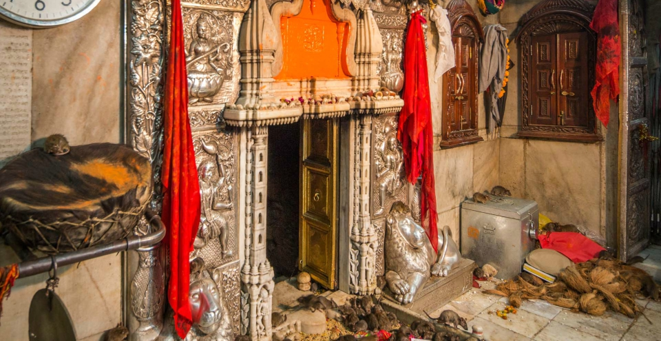
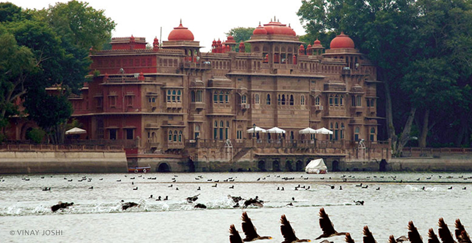

AJMER
THE DELIGHTFUL DARGAH DESTINATION
The city of Ajmer gets its name from ‘Ajay Meru’. Roughly translated, it means ‘invincible hills’. Nestled in the Aravallis south west of Jaipur, Ajmer was founded by Raja Ajaypal Chauhan in the 7th century AD. Till the late 12th century AD, Ajmer was the epicentre of the Chauhan dynasty. After Prithviraj Chauhan’s loss to Mohammed Ghori in 1193 AD, Ajmer became home to several dynasties. The Mughals in particular, fancied it as their favourite destination due to the presence of the holy Ajmer Sharif Dargah.
One of the early meetings between the Mughal King Jahangir and the Ambassador of the Court of Queen Elizabeth, Sir Thomas Roe, took place here in 1616. A few centuries later, the city was handed over to the British, making Ajmer the only region in Rajputana to be directly controlled by the East India Company. Ajmer is now regarded as an educational and cultural centre.
Ajmer is home to the famous Dargah Sharif, which houses the Tomb of Garib Nawaz, also known as Moinuddin Chisti, the founder of the Chisti order of Sufism. Ajmer is also known for Mayo College, one of the country’s first schools that was a stepping stone for British style of education. It is also a sacred city for Hindus and Muslims alike and is renowned for being a centre of history and culture and beauty.
ATTRACTIONS & PLACES TO VISIT AND EXPLORE IN AJMER

THE AJMER SHAREEF DARGAH
This is a Sufi shrine which encloses the ‘maqbara’ (grave) of Garib Nawaz, the Sufi saint Khwaja Moinuddin Chisti. Built in the 13th century, the shrine is popular among people of all faiths who flock here to have their prayers answered. The shrine has three gates – the main gate or the Nizam gate, the Shah Jahan gate erected by the Mughal Emperor and the Buland Darwaza. Another big draw at this holy shrine is the sacred and scrumptious food that is served to devotees. Cooked in giant cauldrons known as ‘degs’, devotees gather in throngs to be blessed by this prasad.

MAYO COLLEGE
Mayo College is one of India’s oldest independent boarding schools. Founded in 1875, and named after Richard Bourke, the 6th Earl of Mayo, Mayo College was set up to provide the scions of India’s princely states with an education similar to that provided by the Eton College in Britain. John Lockwood Kipling, father of Nobel Laureate, Rudyard Kipling, as principal of Mayo College, furnished the design of the Coat of Arms which shows a Rajput and a Bhil warrior. The college building is one of the finest extant examples of Indo-Saracenic style of architecture.

SONIJI KI NASIYAN
Soniji ki Nasiyan, also known as the Ajmer Jain Temple, is a wonderful example of ornate architecture, and is dedicated to Risabh or Adinath. Its entrance is made of red stone and the marble staircase inside is engraved with images of the holy Tirthankars – omniscient

LAKE FOY SAGAR
LAKE FOY SAGAR
A beautiful artificial lake that appears flat, Lake Foy Sagar was built by an English engineer, Mr. Foy in 1892 AD. Interestingly, this work was taken up to provide famine relief through wage employment to locals. Lake Foy Sagar offers a beautiful view of the Aravalli range.

LALGARH PALACE AND MUSEUM
Maharaja Ganga Singh commissioned the construction of this majestic palace. This architectural marvel is made entirely of red sandstone and was built in 1902 to commemorate his father, Maharaja Lal Singh. The design was conceptualised by Sir Swinton Jacob, who created this oriental fantasy by blending Rajputana, Islamic and European architecture.

RAMPURIA HAVELI
Bikaner has several havelis (aristocratic homes), the most famous cluster being the Rampuria Group of Havelis. Built of dulmera (red) stone, every aspect of the havelis – jharokhas (casements), entrances, latticed windows, divankhanas, gumaharias or basements – is simply exotic. Leaves and flowers decorate every jharokha, lending it a pleasant touch.

PRACHINA MUSEUM
Located in the great Junagarh Fort, this museum hosts royal costumes, textiles and accessories of Rajasthani royalty. The 'Poshaks' (garments worn by ladies) are a reminder of the now lost craft of traditional designs, styles and workmanship. The family portraits on display narrate a story about how changing cultural settings influenced the style of immortalising the former rulers.

DESHNOK KARNI MATA TEMPLE
The Karni Mata Temple at Deshnok is a beautiful structure made of stone and marble, inside which resides an image of Karni Mata. The image is decorated with a ‘mukut’ (tiara) and garlands. The images of her sisters and the sisters of Avad Mata give her company on either side. The temple is known the world over for the presence of kabas (rats) that roam freely within the temple precincts.

GAJNER PALACE AND LAKE
Gajner is an incomparable jewel of the Thar. The Gajner Palace was founded by Maharaja Gaj Singh ji of Bikaner in the year 1784, and then completed by the great Maharaja Ganga Singh of Bikaner on the banks of the lake. It was meant to serve as a hunting and relaxing lodge for the royal family as well as for visiting guests. It has now been converted into a hotel.

KODAMDESAR TEMPLE
24 kilometres from Bikaner is the Kodamdesar Temple. Kodamdesar Bhainru Ji was installed by Rao Bikaji sometime during the first three years of his arrival from Jodhpur. This place of worship was initially chosen as the site to lay the foundation of Bikaner, but was later shifted to its present location.
HOW TO REACH HERE
The nearest airport is Civil Airport at Jodhpur which is 253 kilometres away.
The bus stand is north of the city centre. There are frequent express buses to Agra, Ahmedabad, Ajmer, Barmer, Delhi, Jaipur, Jaisalmer, Jhunjhunu, Jodhpur, Kota and Udaipur.
Bikaner has railway connections to several destinations in India including Jaipur, Jaisalmer, Churu, Jodhpur, Delhi, Mumbai, Kolkata, Guwahati etc.